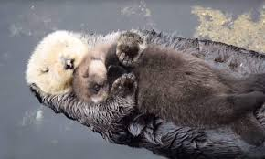
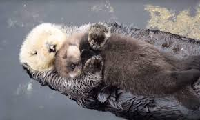

HabitatHabitat e Distribuição
As lontras habitam diversos ambientes aquáticos, incluindo rios, lagos, pântanos e costas marítimas. Elas são encontradas
em todos os continentes, exceto na Austrália e na Antártica. As diferentes espécies adaptaram-se
a seus habitats específicos; por exemplo, a lontra-marinha vive em águas costeiras e é especialmente conhecida por sua pelagem densa e impermeável.
ConservaçãoConservação
Infelizmente, muitas espécies de lontras estão ameaçadas. A poluição dos habitats aquáticos, a perda de espaço devido ao desenvolvimento
urbano e a caça são algumas das principais ameaças. Programas de conservação e proteção de
habitat são cruciais para garantir a sobrevivência das lontras e a saúde dos ecossistemas em que vivem.
em baixo, veja as lontras
.jpg) 

Comportamento e dietaComportamento e Dieta
Lontras são carnívoras e têm uma dieta variada que inclui peixes, moluscos, crustáceos e pequenos mamíferos. Elas são caçadoras
ágeis, utilizando suas habilidades de natação para perseguir presas. Algumas espécies, como a
lontra-europeia, são solitárias, enquanto outras, como a lontra-marinha, vivem em grupos sociais.
Reproduzindo e Crescimento
A reprodução varia entre as espécies, mas geralmente as lontras têm uma ninhada de dois a cinco filhotes. Os filhotes nascem cegos
e dependem da mãe para proteção e alimento nos primeiros meses. As lontras são bastante dedicadas
e ensinam os filhotes a caçar e nadar.:
Curiosidades:
Curiosidades
As lontras têm um comportamento de "ferramenta": elas usam pedras para quebrar conchas de moluscos.
São conhecidas por sua habilidade de deslizar em superfícies cobertas de neve ou lama, o que as torna ainda mais divertidas de observar.
Esses mamíferos encantadores são uma parte vital da biodiversidade e merecem nossa atenção e proteção!
sobre:
As lontras são mamíferos aquáticos pertencentes à família Mustelidae, que também inclui animais como furões e doninhas.
Elas são conhecidas por sua aparência adorável, com corpos alongados, patas palmadas e pelagem densa que as mantém aquecidas em ambientes frios.
Esses animais são encontrados em diversas regiões do mundo, especialmente em ambientes aquáticos como rios, lagos e costas
marítimas. As lontras são habilidosas nadadoras e passam muito tempo na água, onde caçam peixes, crustáceos e outros pequenos animais.
Socialmente, algumas espécies, como a lontra-marinha, são conhecidas por viverem em grupos e até utilizarem
pedras como ferramentas para abrir moluscos. Elas também são muito brincalhonas, frequentemente se envolvendo em
atividades lúdicas, o que as torna fascinantes de observar.
Além disso, as lontras desempenham um papel importante nos ecossistemas aquáticos, ajudando a manter o equilíbrio das populações
de suas presas e contribuindo para a saúde dos habitats em que vivem. Infelizmente, muitas espécies de lontras
enfrentam ameaças devido à poluição, destruição de habitat e caça. A conservação dessas criaturas é
essencial para garantir sua sobrevivência e a saúde dos ambientes que habitam.
Para saber mais : IBAMA.org